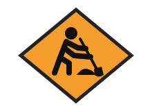

Illinois Secretary of State Permit Practice Test and Road Signs
Illinois requires at least 35 questions and 80% correct. On a 35-question test, that means 28 correct and up to 7 missed; use the actual length if your test is longer. Check the official rule.
Illinois test facts
Topic
What to know
Source
Test size, mark and languages
At least 35 Class D questions; 80% correct. English is required to be available; the Secretary of State may offer additional languages.
Signed school-zone speed limit The 20 mph rule applies on school days between 6:30 a.m. and 4 p.m. when children are present and signs are posted. (Chapter 4: Traffic Laws, Speed Limits)
Permit holding period The Illinois teen permit generally must be held for at least nine months before moving to initial licensing, alongside other GDL requirements. (Chapter 3: Drivers Under Age 21)
Supervised practice hours A teen needs at least 50 practice hours, including 10 at night, with a qualifying supervisor. (Chapter 3: Drivers Under Age 21)
Hands-free phone restriction under 19 Drivers under age 19 cannot use a phone while driving, including hands-free, except for an eligible emergency contact. (Chapter 3: Drivers Under Age 21)
Weeknight and weekend restrictions The statewide GDL limit normally starts at 10 p.m. Sunday through Thursday and 11 p.m. Friday and Saturday. Local curfews can differ. (Chapter 3: Drivers Under Age 21)
Practice Illinois rules
Say what you would do before opening the answer. If you miss a scenario, review the named section in the handbook before trying the second example.
1. Children are outside a signed school zone at 3 p.m. on a school day. Is the usual road speed the limit there?
Answer: No. The school-zone limit is 20 mph.
The 20 mph rule applies on school days between 6:30 a.m. and 4 p.m. when children are present and signs are posted.
Manual: Chapter 4: Traffic Laws, Speed Limits
2. You see a posted school-zone sign after school hours. Can that time alone tell you every applicable limit?
Answer: No. Check posted instructions and conditions; the specific school-zone rule has several conditions.
The 20 mph rule applies on school days between 6:30 a.m. and 4 p.m. when children are present and signs are posted.
Manual: Chapter 4: Traffic Laws, Speed Limits
3. You got the permit at 15 and have held it seven months. Are you through the holding phase?
Answer: No. The minimum is nine months.
The Illinois teen permit generally must be held for at least nine months before moving to initial licensing, alongside other GDL requirements.
Manual: Chapter 3: Drivers Under Age 21
4. Nine months have passed, but you have not finished supervised practice. Are you ready simply because enough time elapsed?
Answer: No. The hours are a separate requirement.
The Illinois teen permit generally must be held for at least nine months before moving to initial licensing, alongside other GDL requirements.
Manual: Chapter 3: Drivers Under Age 21
5. Your log has 51 hours, seven of them at night. What is missing?
Answer: Three nighttime hours.
A teen needs at least 50 practice hours, including 10 at night, with a qualifying supervisor.
Manual: Chapter 3: Drivers Under Age 21
6. Your log has 39 daylight hours and 10 nighttime hours. Does it satisfy both counts?
Answer: No. One more total hour is needed.
A teen needs at least 50 practice hours, including 10 at night, with a qualifying supervisor.
Manual: Chapter 3: Drivers Under Age 21
7. You're 18 and want to dictate a routine text with voice controls. Is it allowed?
Answer: No. Hands-free use is also restricted.
Drivers under age 19 cannot use a phone while driving, including hands-free, except for an eligible emergency contact.
Manual: Chapter 3: Drivers Under Age 21
8. A driver under 19 needs emergency services after seeing a crash. Is that the same as using a phone for a social call?
Answer: No. The rule includes an emergency exception.
Drivers under age 19 cannot use a phone while driving, including hands-free, except for an eligible emergency contact.
Manual: Chapter 3: Drivers Under Age 21
9. A teen with an initial license plans an ordinary Thursday drive at 10:30 p.m. Is it within ordinary hours?
Answer: No. The Thursday restriction starts at 10 p.m.
The statewide GDL limit normally starts at 10 p.m. Sunday through Thursday and 11 p.m. Friday and Saturday. Local curfews can differ.
Manual: Chapter 3: Drivers Under Age 21
10. Does the same 10 p.m. statewide start automatically apply on Saturday?
Answer: No. Saturday's statewide start is 11 p.m.; local rules can be earlier.
The statewide GDL limit normally starts at 10 p.m. Sunday through Thursday and 11 p.m. Friday and Saturday. Local curfews can differ.
Manual: Chapter 3: Drivers Under Age 21
Road sign self-check
Cue
First read
Red octagon
Stop and check the intersection.
Yellow diamond
Look for the warning and prepare for the condition.
11. For Illinois practice, what does this sign set?
Answer: A posted maximum speed under normal conditions
Speed limit signs show the posted maximum speed under normal conditions unless conditions require slower driving. This page uses original artwork; verify final rules in the Illinois Rules of the Road.
Manual: Traffic Signs, Signals and Pavement Markings
12. What should you expect near this sign?
Answer: Children may be crossing nearby
School crossing signs warn drivers to slow down and watch for children. This page uses original artwork; verify final rules in the Illinois Rules of the Road.
Manual: Traffic Signs, Signals and Pavement Markings
13. This sign warns drivers to watch for:
Answer: People crossing the roadway
Pedestrian crossing signs tell drivers to look carefully and be ready to yield. This page uses original artwork; verify final rules in the Illinois Rules of the Road.
Manual: Traffic Signs, Signals and Pavement Markings
14. For Illinois practice, what road situation does this sign warn about?
Answer: Traffic streams will join together
Merge signs warn that vehicles from another lane or ramp will join your lane. This page uses original artwork; verify final rules in the Illinois Rules of the Road.
Manual: Traffic Signs, Signals and Pavement Markings
15. This sign means:
Answer: A lane will end or narrow ahead
Lane Ends signs warn you to prepare for a lane reduction and merge safely. This page uses original artwork; verify final rules in the Illinois Rules of the Road.
Manual: Traffic Signs, Signals and Pavement Markings
16. What hazard does this sign warn about?
Answer: Slippery road surface when wet
Slippery road signs warn that traction may be reduced, especially when wet. This page uses original artwork; verify final rules in the Illinois Rules of the Road.
Manual: Traffic Signs, Signals and Pavement Markings
17. For Illinois practice, this sign marks or warns of:
Answer: A railroad crossing
Railroad crossing signs warn drivers to look, listen, and never stop on tracks. This page uses original artwork; verify final rules in the Illinois Rules of the Road.
Manual: Traffic Signs, Signals and Pavement Markings

18. What does this orange sign usually mean?
Answer: Road work or temporary traffic control
Orange signs usually mark construction, maintenance, or temporary traffic patterns. This page uses original artwork; verify final rules in the Illinois Rules of the Road.
Manual: Traffic Signs, Signals and Pavement Markings
19. This sign warns that ahead there is:
Answer: A traffic signal
Signal Ahead signs warn drivers to prepare for a traffic light. This page uses original artwork; verify final rules in the Illinois Rules of the Road.
Manual: Traffic Signs, Signals and Pavement Markings
20. For Illinois practice, what does this sign warn about?
Answer: A divided roadway or median begins
The upward arrow on the right bends outward beside the divider shown at the top. A physical median will separate traffic ahead. Check the Illinois Rules of the Road for local rules.
Manual: Traffic Signs, Signals and Pavement Markings